VisualCAM installs with Preset <Alt> Key combinations that you can use to quickly execute the various commands located on each Ribbon Bar. Refer to topic below for more information.
1.Press the <Alt> key on your keyboard and VisualCAM will display (and activate) <Alt> key assignments for the VisualCAM Menu, Quick Access Toolbar and each Ribbon Bar. 2.With the <Alt> key pressed, you can then press one of the assigned keys to execute the command or display the menu or Ribbon Bar. 3.To display (and activate) the <Alt> keys assigned to commands on one of the Ribbon Bars, first press the <Alt> key combination for the desired Ribbon Bar and then with the <Alt> key still pressed, press the key assigned to the desired command. 4.For example, to execute the Single Line command, press <Alt+C> to display the Curve Modeling Ribbon Bar and then press <LS> with the <Alt> key still pressed. The preset <Alt> key assignments for each menu and command are shown below. |
The following preset <Alt> Accelerator key combinations are assigned to commands on the VisualCAM Menu, Quick Access Toolbar and Ribbon Bars as shown below. These can be displayed in VisualCAM by pressing the <Alt> key. For example, pressing <Alt+A> will automatically display the Modeling Aids Ribbon Bar. 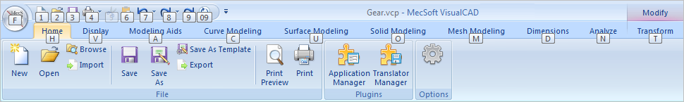 Preset <Alt> Keys: Menus |
The following preset <Alt> Accelerator key combinations are assigned to commands on the Home Ribbon Bar. 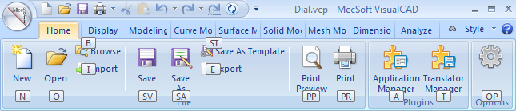 Preset <Alt> Keys: Home Ribbon Bar |
The following preset <Alt> Accelerator key combinations are assigned to commands on the Display Ribbon Bar. 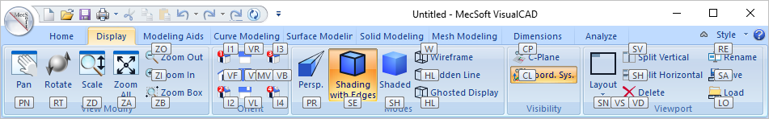 Preset <Alt> Keys: Display Ribbon Bar |
The following preset <Alt> Accelerator key combinations are assigned to commands on the Modeling Aids Ribbon Bar. 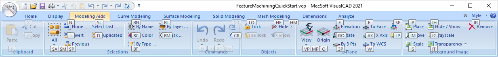 Preset <Alt> Keys: Modeling Aids Ribbon Bar |
The following preset <Alt> Accelerator key combinations are assigned to commands on the Curve Modeling Ribbon Bar. 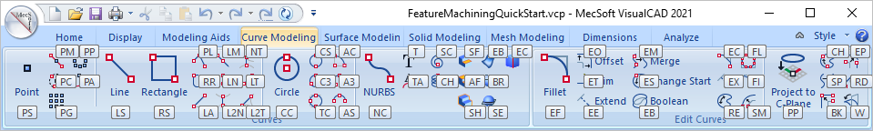 Preset <Alt> Keys: Curve Modeling Ribbon Bar |
The following preset <Alt> Accelerator key combinations are assigned to commands on the Surface Modeling Ribbon Bar. 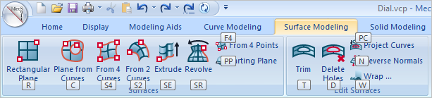 Preset <Alt> Keys: Surface Modeling Ribbon Bar |
The following preset <Alt> Accelerator key combinations are assigned to commands on the Solid Modeling Ribbon Bar. 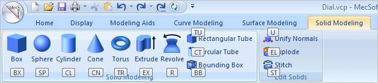 Preset <Alt> Keys: Solid Modeling Ribbon Bar |
The following preset <Alt> Accelerator key combinations are assigned to commands on the Mesh Modeling Ribbon Bar. 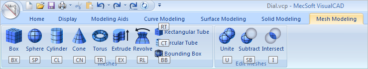 Preset <Alt> Keys: Mesh Modeling Ribbon Bar |
The following preset <Alt> Accelerator key combinations are assigned to commands on the Dimensions Ribbon Bar. 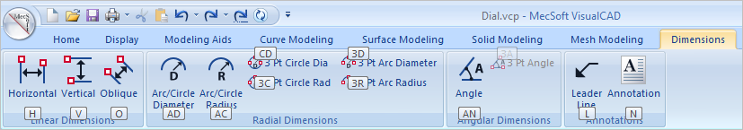 Preset <Alt> Keys: Dimensions Modeling Ribbon Bar |
The following preset <Alt> Accelerator key combinations are assigned to commands on the Analyze Ribbon Bar. 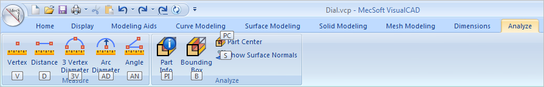 Preset <Alt> Keys: Analyze Ribbon Bar |
The following preset <Alt> Accelerator key combinations are assigned to commands on the Transform Ribbon Bar. 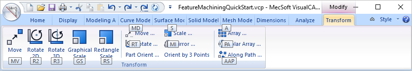 Preset <Alt> Keys: Transform Ribbon Bar |